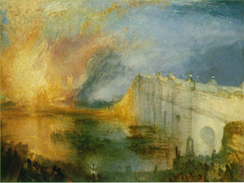

Many people have heard that the number zero was introduced later than the other digits. Upon hearing this it seems fantastical - how could people have managed even elementary arithmetic without zero? However, it is not the concept of “nothing” that was missing, but rather the use of a zero in other places when representing or recording numbers. For example, in the number 101, zero is used as a separator, and it is this concept that was lacking in early number systems.
{kind=link}
We are used to our modern decimal representation where each digit represents units, tens, hundreds, thousands, etc. Not all systems worked that way - the Roman system is a well-known example of a different approach. Throughout history there have been many alternative ways of recording numbers. In ancient China and the South Sea islands knots in string were used. Creating notches in sticks is another (the word score has its roots in this method, as do the Roman numerals I, II, III). Contracts were often formalized by scoring a piece of wood with an appropriate count then splitting it in two with each party taking half; the halves would be matched up later to ensure no alteration. 
{kind=link}
In Britain such Exchequer tallies were used from the 12th century and were legally binding until 1826; in 1834 the burning of the no-longer required tallies started a fire that destroyed the old Parliament buildings.
The use of simple score marks developed with writing into more sophisticated forms. Different symbols were used for values of different magnitudes, and they were repeated as necessary (e.g. III for 3, and CCC for 300 in Rome). The use of subtractive methods (IV instead of IIII) was a later innovation.
This simple grouping approach evolved into a multiplicative approach, where instead of repeating a symbol it was preceded with a count. For example, if that were applied to Roman numbers we might write 3C3V for 315. A real example is the Chinese-Japanese number system.
A different approach is a ciphered approach, where there are separate symbols for the ten symbols 0 through 9, then the nine symbols 10 , 20, 30 through 90, then 100, 200, 300 through 900, and so on. Examples of this are the Hindu Brahmi and the Egyptian hieratic and demotic systems. Variations on this, where alphabetic characters were repurposed for numbers, are the Greek numerals, Hebrew, Syrian and Gothic systems.
Unfortunately, many of these systems are ill-suited for calculations, as anyone who has attempted math on Roman numerals will know. Performing arithmetic was thus considered an advanced art and required the assistance of tools such as the abacus. It was only with the spread of the Hindu-Arabic decadic positional system around 800AD that arithmetic operations became easy to perform without assistance. It was positional systems that necessitated the introduction of a symbol to represent no value at a particular position, to distinguish, for example, 31 from 301. The lack of a zero made the earlier positional systems such as the Babylonian sexagesimal system highly ambiguous, although the Mayans developed an early positional representation system that included a zero, which may account for why their mathematical calculations were considerably more advanced and accurate than other cultures.
{kind=link}
The spread of the Hindu-Arabic system was largely facilitated by the translation into Latin of the text Al-Jabr wal-Muqabalah (hence: algebra) by the great Arab mathematician Mohammed ibn Musa al-Khowarizmi. The use of this system became known as algorism (leading to the modern word algorithm) , but its adoption took time; the abacists who adhered to the Roman system resisted the algorismic system and it took until the 16th century for it to become predominant in Europe.